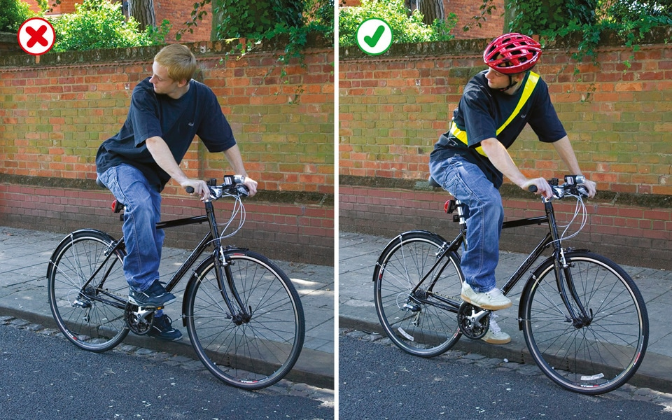

Rules for cyclists (59 to 82)
1. Overview (59 to 71)
These rules are in addition to those in the following sections, which apply to all vehicles (except the motorway section). See also You and your bicycle.
59
Clothing. You should avoid clothes that may get tangled in the chain, or in a wheel or may obscure your lights when you are cycling.
Light-coloured or fluorescent clothing can help other road users to see you in daylight and poor light, while reflective clothing and/or accessories (belt, arm or ankle bands) can increase your visibility in the dark.
You should wear a cycle helmet that conforms to current regulations, is the correct size and securely fastened. Evidence suggests that a correctly fitted helmet will reduce your risk of sustaining a head injury in certain circumstances.
59
Clothing. You should avoid clothes that may get tangled in the chain, or in a wheel or may obscure your lights when you are cycling.
Light-coloured or fluorescent clothing can help other road users to see you in daylight and poor light, while reflective clothing and/or accessories (belt, arm or ankle bands) can increase your visibility in the dark.
You should wear a cycle helmet that conforms to current regulations, is the correct size and securely fastened. Evidence suggests that a correctly fitted helmet will reduce your risk of sustaining a head injury in certain circumstances.

Rule 59: Help yourself to be seen
60
At night your cycle MUST have white front and red rear lights lit. It MUST also be fitted with a red rear reflector (and amber pedal reflectors, if manufactured after 1/10/85). White front reflectors and spoke reflectors will also help you to be seen. Flashing lights are permitted but it is recommended that cyclists who are riding in areas without street lighting use a steady front lamp.
Law RVLR regs 13, 18 & 24
61
Cycle Routes and Other Facilities. Cycle lanes are marked by a white line (which may be broken) along the carriageway (see Rule 140). Use facilities such as cycle lanes and tracks, advanced stop lines and toucan crossings (see Rules 62 and 73) where they make your journey safer and easier. This will depend on your experience and skills and the situation at the time. While such facilities are provided for reasons of safety, cyclists may exercise their judgement and are not obliged to use them.
62
Cycle Tracks. These are routes for cyclists that are physically protected or located away from motor traffic, other than where they cross side roads (see Rule 206). Cycle tracks may run alongside footpaths or pavements and be separated by a feature such as a change of material, a verge, a kerb or a white line. You MUST keep to the side intended for cyclists as the pedestrian side remains a pavement or footpath.
Some cycle tracks shared with pedestrians will not be separated by such a feature. On such shared use routes, you should always take care when passing pedestrians, especially children, older or disabled people, and allow them plenty of room. Always be prepared to slow down and stop if necessary (see Rule H2).
63
Sharing space with pedestrians, horse riders and horse drawn vehicles. When riding in places where sharing with pedestrians, horse riders or horse drawn vehicles is permitted, take care when passing pedestrians and horse riders, especially children, older adults or disabled people. Slow down when necessary and let them know you are there; for example, by ringing your bell (it is recommended that a bell is fitted to your bike), or by calling out politely.
Remember that pedestrians may be deaf, blind or partially sighted and that this may not be obvious.
Do not pass pedestrians, horse riders or horse drawn vehicles closely or at high speed, particularly from behind. You should not pass a horse on their left. Remember that horses can be startled if passed without warning. Always be prepared to slow down and stop when necessary.
64
You MUST NOT cycle on a pavement.
Laws HA 1835 sect 72 & R(S)A 1984, sect 129
65
Bus Lanes. Most bus lanes may be used by cyclists as indicated on signs. Watch out for people getting on or off a bus. Be very careful when overtaking a bus or leaving a bus lane as you will be entering a busier traffic flow. Do not pass between the kerb and a bus when it is at a stop.
66You should
67You should
68
You MUST NOT
69
You MUST obey all traffic signs and traffic light signals.
Laws RTA 1988 sect 36 & TSRGD Schedule 3 pt 3, sch7 pt4, sch9 pts 4 and 6, sch 13 pt 6, sch 14 pt 2
70
When parking your cycle
71At traffic light junctions and at cycle-only crossings with traffic lights, you MUST NOT cross the stop line when the traffic lights are red.
Some junctions have an advanced stop line to enable you to position yourself ahead of other traffic and wait (see Rule 178). When the traffic lights are red, you may cross the first stop line, but you MUST NOT cross the final stop line.
Laws RTA 1988 sect 36 & TSRGD regs 10 & 36(1)
At night your cycle MUST have white front and red rear lights lit. It MUST also be fitted with a red rear reflector (and amber pedal reflectors, if manufactured after 1/10/85). White front reflectors and spoke reflectors will also help you to be seen. Flashing lights are permitted but it is recommended that cyclists who are riding in areas without street lighting use a steady front lamp.
Law RVLR regs 13, 18 & 24
61
Cycle Routes and Other Facilities. Cycle lanes are marked by a white line (which may be broken) along the carriageway (see Rule 140). Use facilities such as cycle lanes and tracks, advanced stop lines and toucan crossings (see Rules 62 and 73) where they make your journey safer and easier. This will depend on your experience and skills and the situation at the time. While such facilities are provided for reasons of safety, cyclists may exercise their judgement and are not obliged to use them.
62
Cycle Tracks. These are routes for cyclists that are physically protected or located away from motor traffic, other than where they cross side roads (see Rule 206). Cycle tracks may run alongside footpaths or pavements and be separated by a feature such as a change of material, a verge, a kerb or a white line. You MUST keep to the side intended for cyclists as the pedestrian side remains a pavement or footpath.
Some cycle tracks shared with pedestrians will not be separated by such a feature. On such shared use routes, you should always take care when passing pedestrians, especially children, older or disabled people, and allow them plenty of room. Always be prepared to slow down and stop if necessary (see Rule H2).
63
Sharing space with pedestrians, horse riders and horse drawn vehicles. When riding in places where sharing with pedestrians, horse riders or horse drawn vehicles is permitted, take care when passing pedestrians and horse riders, especially children, older adults or disabled people. Slow down when necessary and let them know you are there; for example, by ringing your bell (it is recommended that a bell is fitted to your bike), or by calling out politely.
Remember that pedestrians may be deaf, blind or partially sighted and that this may not be obvious.
Do not pass pedestrians, horse riders or horse drawn vehicles closely or at high speed, particularly from behind. You should not pass a horse on their left. Remember that horses can be startled if passed without warning. Always be prepared to slow down and stop when necessary.
64
You MUST NOT cycle on a pavement.
Laws HA 1835 sect 72 & R(S)A 1984, sect 129
65
Bus Lanes. Most bus lanes may be used by cyclists as indicated on signs. Watch out for people getting on or off a bus. Be very careful when overtaking a bus or leaving a bus lane as you will be entering a busier traffic flow. Do not pass between the kerb and a bus when it is at a stop.
66You should
- avoid any actions that could reduce your control of your cycle
- be considerate of the needs of other road users when riding in groups. You can ride two abreast and it can be safer to do so, particularly in larger groups or when accompanying children or less experienced riders. Be aware of drivers behind you and allow them to overtake (for example, by moving into single file or stopping) when you feel it is safe to let them do so
- not ride close behind another vehicle in case it stops suddenly
- not carry anything which will affect your balance or may get tangled up with your wheels or chain
- be considerate of other road users, particularly blind and partially sighted pedestrians, and horse riders (see Rule H1). Let them know you are there when necessary, for example, by calling out or ringing your bell if you have one. It is recommended that a bell be fitted.
67You should
- look all around to make sure it is safe before moving away from the kerb, when pulling out to overtake or to pass stationary vehicles, or when turning at junctions or stopping
- watch out for obstructions in the road, such as drains, service covers and potholes, positioning yourself so you can move to the left (as well as to the right) to avoid them safely
- take care when passing parked vehicles, leaving enough room (a door’s width or 1 metre) to avoid being hit if a car door is opened, and watch out for pedestrians stepping into your path
- be aware of traffic coming up behind you, including other cyclists, and give a clear signal to show other road users what you intend to do see ‘Signals to other road users’)
- take extra care near road humps, narrowings and other traffic calming features
- when cycling on the road, only pass to the left of large vehicles when they are stationary or slow moving and you should proceed with caution as the driver may not be able to see you. Be particularly careful on the approach to junctions or where a large vehicle could change lanes to the left.
68
You MUST NOT
- carry a passenger unless your cycle has been built or adapted to carry one
- hold onto a moving vehicle or trailer
- ride in a dangerous, careless or inconsiderate manner
- ride when under the influence of drink or drugs, including medicine.
69
You MUST obey all traffic signs and traffic light signals.
Laws RTA 1988 sect 36 & TSRGD Schedule 3 pt 3, sch7 pt4, sch9 pts 4 and 6, sch 13 pt 6, sch 14 pt 2
70
When parking your cycle
- find a conspicuous location where it can be seen by passers-by
- use cycle stands or other cycle parking facilities wherever possible
- do not leave it where it would cause an obstruction or hazard to other road users
- secure it well so that it will not fall over and become an obstruction or hazard.
71At traffic light junctions and at cycle-only crossings with traffic lights, you MUST NOT cross the stop line when the traffic lights are red.
Some junctions have an advanced stop line to enable you to position yourself ahead of other traffic and wait (see Rule 178). When the traffic lights are red, you may cross the first stop line, but you MUST NOT cross the final stop line.
Laws RTA 1988 sect 36 & TSRGD regs 10 & 36(1)